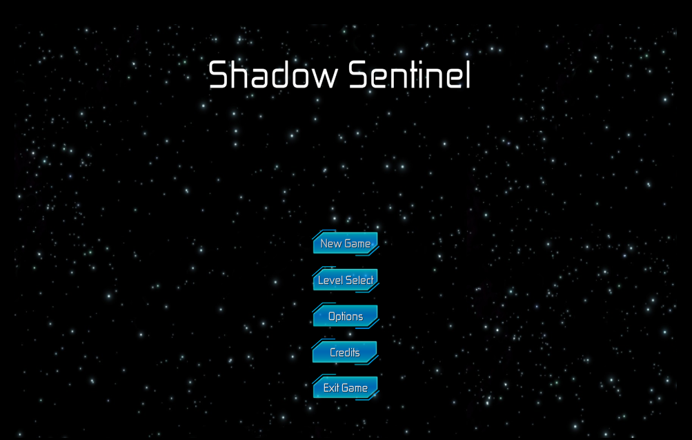

Student Project · Unity · C#
Stealth Prototype · Gameplay Developer
Implemented a sound detection stealth system, advanced enemy AI, and modular systems for customizing enemy logic and animations. My first shipped game project, built as a class assignment at Full Sail University.
This was my first real game project for a class at Full Sail. The assignment was to build a small stealth prototype — I wanted enemies to feel believable and react to the noises the player makes.
I was the Gameplay Developer on the team. I implemented player movement, the minimap, player and enemy animations, the enemy AI, and the sound detection system. It was a small team project and I picked up many practical Unity skills along the way.
Movement, input handling, and animation blending so the character feels responsive and readable at all times.
A simple UI minimap to help with navigation and spatial awareness in tight, enclosed levels.
Footsteps and player actions generate configurable noise radii that can alert nearby enemies. Tuning the radii and falloff was key to making stealth feel fair and readable.
Patrols, sight cones, investigation behavior, and alert/chase states driven by a Finite State Machine. Hooks were added to the FSM so behavior could be modified without rewriting core logic. Detection combines noise radii with line-of-sight checks to balance stealth and fairness.
State-driven animation transitions for patrol, alert, and chase using Animator controllers and blend trees to keep enemy motion smooth across all states.
Tuning detection ranges and timing was harder than expected — numbers too small made the game frustrating, too large made it trivial. I learned to use debug gizmos and logs to visualize AI perception in real time. Working in a small team taught me practical Git workflows and how to divide features cleanly. Overall I came away with a solid foundation in Unity's animation system, C# gameplay scripting, and iterating quickly on playfeel.